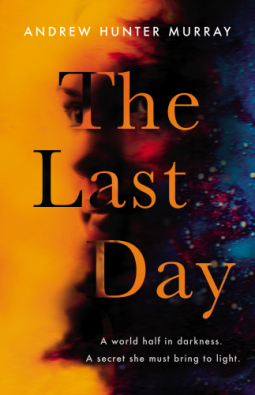
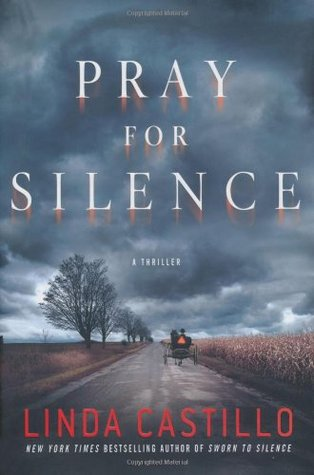
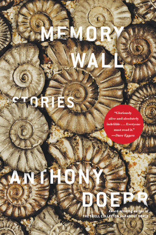

<!doctype html>
<html>
    <title>Adventure</title>
    <link rel="stylesheet" href="main.css">
</html>
<body>
    <nav>
        <label class="logo">Adventure</label>
        <ul class="nav-links">
            <li><a href="index.html">Home</a></li>
            <li><a href="book1.html">Science Fiction</a></li>
            <li><a href="book2.html">Thriller</a></li>
            <li><a href="book3.html">Horror</a></li>
            <li><a href="book4.html">Humour</a></li>
            <li><a href="book5.html">Mystry</a></li>
        </ul>
    </nav>
    <table cellspacing="20px">
        <tr>
            <td>
                <details>
                    <summary>Introduction</summary>
                      <p>
                        A WORLD HALF IN DARKNESS. A SECRET SHE MUST BRING TO LIGHT.

                        2059. The world has stopped turning.
                        
                        One half suffers an endless frozen night; the other, nothing but burning sun.
                        
                        Only in a slim twilit region can life survive.
                        
                        In an isolationist Britain, Ellen Hopper receives a letter from a dying man.
                        It contains a powerful and dangerous secret.
                        
                        One that those in power will kill to conceal…
                      </p>     
                    
                </details></td>
            
            <td class="a">
                <h3>The last day</h3>
                <p>Andrew Hunter Murray</p>
                <a class="btn1" href="order.html">Purchase</a>
            </td>
        </tr>
        <tr>
            <td>
                <details>
                    <summary>Introduction</summary>
                      <p>
                        The Plank family moved from Lancaster, Pennsylvania, to join the small Amish community of Painters Mill less than a year ago and seemed the model of the Plain Life—until on a cold October night, the entire family of seven was found slaughtered on their farm. Police Chief Kate Burkholder and her small force have few clues, no motive, and no suspect. Formerly Amish herself, Kate is no stranger to the secrets the Amish keep from the English—and each other—but this crime is horribly out of the ordinary.

State agent John Tomasetti arrives on the scene to assist. He and Kate worked together on a previous case during which they began a volatile relationship. They soon realize the disturbing details of this case will test their emotional limits and force them to face demons from their own troubled pasts—and for Kate, a personal connection that is particularly hard to bear.
                      </p>     
                    
                </details></td>
            <td class="a">
                <h3>Pray for Silence</h3>
                <p>Linda Castillo</p>
                <a class="btn1" href="order.html">Purchase</a>
            </td>
        </tr>

        <tr>
            <td><details>
                <summary>Introduction</summary>
                  <p>
                    Claire's life revolves around Starbucks, stilettos and her career as an Advertising Account Director for AJC. That is until her boss Carl decides to send her on a mission to visit every one of the 200 YHA hostels in England and Wales as part of a marketing campaign. More used to five-star spa resorts than 'flea-infested hostels' Claire only takes the assignment to save face. It becomes clear to her the 'mission' is a ruse to make her resign. Even when she does make the leap for freedom, life continues to be less than straightforward and Claire finds herself still on the road, this time in the south west of England.</p>     
                
            </details></td>
            <td class="a">
                <h3>Two Hundred Steps Home</h3>
                <p>Amanda Martin</p>
                <a class="btn1" href="order.html">Purchase</a>
            </td>
        </tr>

        <tr>
            <td>
                <details>
                    <summary>Introduction</summary>
                      <p>
                        Set on four continents, Anthony Doerr's collection of stories is about memory: the source of meaning and coherence in our lives, the fragile thread that connects us to ourselves and to others.

In the luminous and beautiful title story, a young boy in South Africa comes to possess an old woman's secret, a piece of the past with the power to redeem a life. In 'The River Nemunas', a teenaged orphan moves from Kansas to Lithuania to live with her grandfather, and discovers a world in which myth becomes real. 'Village 113' is about the building of the Three Gorges Dam and the seedkeeper who guards the history of a village soon to be submerged. And in 'Afterworld,' the radiant, cathartic final story, a woman who escaped the Holocaust is haunted by visions of her childhood friends in Germany, yet finds solace in the tender ministrations of her grandson.</p>     
                    
                </details></td>
            <td class="a">
                <h3>Memory Wall</h3>
                <p>Anthony Doerr</p>
                <a class="btn1" href="order.html">Purchase</a>
                
            </td>
        </tr>
    </table>
</body>